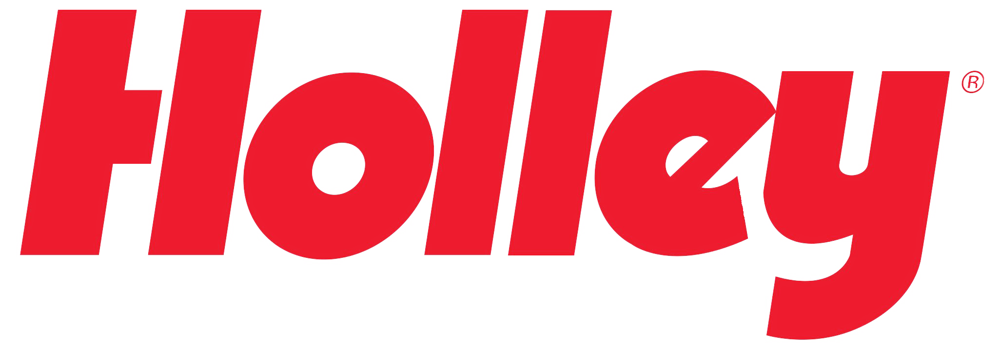

To familiarize me with the primary WPF application my team was developing, a specific set of projects was assigned to me to determine my capability to handle them. The following is a comprehensive list of projects that I undertook during my tenure at Holley Performance Parts.
Everything I learned from this internship that I didn't previously know: WPF frameworks, SVN, XAML, Dependency Injection, IoC, MVVM pattern, Multiple Databinding Techniques, Multithreading, Lambda Expressions, Delegates, Events, and Commands
To help me understand the MVVM pattern, I was assigned a WPF project created by another engineer that did not adhere to the MVVM pattern. My task was to modify the application to align with MVVM principles and collaborate with the application engineer on any new features they
required. Once I had updated the application to follow the MVVM guidelines, I was then asked to modify the application to retrieve multiple data objects instead of just one, which led to some UI issues that necessitated the use of multithreading to prevent freezing. After updating
the application to use multithreading, the application engineer shared the final product with the employee who used the previous version for work. With positive feedback, the project was successfully completed and the employee's workload was reduced from a full day's work of inputting
each ID one by one to processing an entire batch of data in just one hour.
Programming Languages and Frameworks Used: C#, WPF frameworks, SVN, and XAML
The aim of this project was to demonstrate my comprehension of object-oriented programming by working on data manipulation tasks. To accomplish this, I collaborated with a colleague who was experiencing long and complicated tasks that he believed could be simplified with an
application. After discussing his needs and requirements, it was determined that he needed a difference tool that could identify the discrepancies between two binary files, displaying only the different data and disregarding the similarities. I then created a design and
documentation for the application, which I presented to my project manager for approval. After receiving the go-ahead, I began working on the application and completed it within a few days. Once the application was tested and verified, I delivered it to the colleague who
needed it, and I was tasked with overseeing any necessary changes. Fortunately, no modifications were required, and the colleague's efficiency improved significantly, as they could now simply click a button and obtain a separate file containing all the differences without
having to scroll through thousands of pages.
Programming Languages and Frameworks Used: C#, WPF frameworks, SVN, and XAML
Following my completion of the previous projects, I was assigned to the primary application, where I was responsible for adding new features, resolving any bugs, and collaborating with my team to meet sprint objectives. This was, without a doubt, my favorite aspect of the
internship, as I worked alongside a diverse group of developers with various personalities. The application utilized databases, cloud resources, secure network connections, encryption, and user-level permissions.
Programming Languages and Frameworks Used: C#, WPF frameworks, GitHub, Azure, and XAML